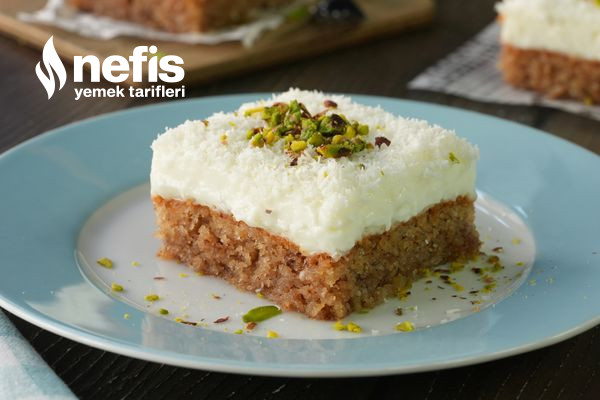
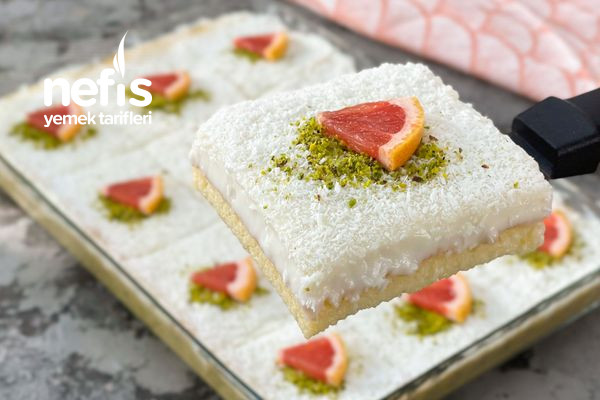
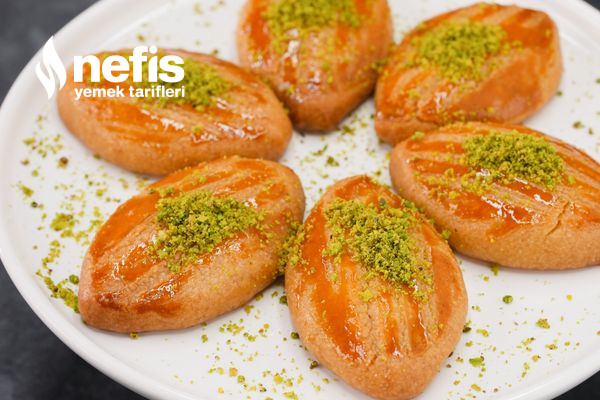

Tatlı Dünyası
Kıbrsı Tatlısı

Gerekli Malzemeler
- 3 adet yumurta
- Yarım su bardağı şeker
- Yarım su bardağı sıvı yağ (100 ml)
- 1 su bardağı galeta unu
- 1 su bardağı kırılmış ceviz
- 1 su bardağı Hindistan cevizi
- 1 paket kabartma tozu
Kreması İçin;
- 1 litre süt
- 1 su bardağı nişasta
- Yarım su bardağı şeker
- 1 paket vanilya
- 1 paket krem şanti
Şerbeti İçin;
- 2 su bardağı su (400 ml)
- 1,5 su bardağı şeker
- 1 paket vanilya
Nasıl Yapılır?
- Kıbrıs tatlısının şerbeti için suyu ve toz şekeri bir tencereye alalım. Karıştırıp şerbeti kaynamaya bırakalım.
- Yaklaşık 15 dakika kaynadıktan sonra ocağı kapatıp şerbete vanilyayı ilave ederek karıştıralım ve soğumaya bırakalım.
- Tatlımızın keki için yumurta ve toz şekeri bir karıştırma kabına alarak mikserle çırpalım.
- Yumurtalar beyazlaşıp köpük köpük oluncaya kadar çırpmaya devam edelim.
- Sıvı yağ, galeta unu, Hindistan cevizi, dövülmüş ceviz ve kabartma tozunu ekleyerek tekrar mikserle çırpalım.
- Tabanını yağladığımız kare borcama veya bu boyutlardaki herhangi uygun bir fırın tepsisine kek hamurunu boşaltalım. Hamuru borcamın her yerine eşit şekilde yayalım.
- Önceden 160 dereceye ısıttığımız fırında 30 dakika boyunca kekimizi pişmeye bırakalım.
- Tatlının kreması için uygun bir tencereye süt, nişasta, toz şeker ve vanilyayı alalım. Muhallebi koyulaşıp kaynayıncaya kadar sürekli karıştırarak pişirelim.
- Göz göz olduktan sonra kremayı ocaktan alarak ayrı bir kaba aktaralım. Üzerine toz krem şanti ilave ettikten sonra mikserle çırpalım.
- Fırından aldığımız kekin üzerine soğuyan şerbeti gezdirelim ve kekimizi soğumaya bırakalım.
- Şerbetli kek tamamen soğuduktan sonra hazırladığımız kremayı üzerine boşaltalım.
- Bir spatula yardımıyla kekin üzerini kremayla kaplayalım.
- Son olarak üzerine bolca Hindistan cevizi serptiğim tatlımızı en az 2-3 saat boyunca buzdolabında dinlenmeye bırakalım.
- Yeterince dinlendikten sonra Kıbrıs tatlımızı dilediğimiz şekilde süsleyerek servis edelim. Afiyet olsun!
Gelin Pastası

Gerekli Malzemeler
Keki İçim;
- 4 adet yumurta
- 1 su bardağı toz şeker
- 1 su bardağı un
- 1 paket vanilya
- 1 paket kabartma tozu
Keki Islatmak İçin;
- 2 su bardağı soğuk süt (400 ml)
- 2 yemek kaşığı şeker
Muhallebisi İçin
- 1 litre süt
- 1 su bardağı toz şeker
- 3 tepeleme yemek kaşığı un
- 2 tepeleme yemek kaşığı nişasta
- 1 paket vanilya
- 1 paket krem şanti (75 g)
Üzeri İçin;
- Hindistan cevizi, fındık, ceviz
Nasıl Yapılır?
- Öncelikle kekimizi hazırlayalım. Bunun için öncelikle yumurta ve şekeri uygun bir kapta beyazlaşıp köpük köpük oluncaya kadar çırpalım.
- Ardından üzerine un, kabartma tozu ve vanilyayı ekleyerek çırpmaya devam edelim.
- 27×40 cm çapındaki dikdörtgen borcamı alalım ve sıvı yağ ile yağlayalım.
- Ardından hazırladığımız kek harcını borcama boşaltalım ve eşit olacak şekilde düzeltelim.
- Kekimizi önceden ısıttığımız 180 derece alt üst fansız ayardaki fırında 15 dakika pişirelim.
- Sürenin sonunda kekimizi fırından alalım ve soğuması için bekletelim.
- Bu sırada muhallebisi için süt, toz şeker, un, nişasta ve vanilyayı tencereye alalım. Karıştırarak pişirmeye başlayalım.
- Kıvamı koyulaşıp göz göz olduğunda muhallebimiz hazır demektir. Soğuması için muhallebimizi bir kaba aktaralım.
- Muhallebi ılıdıktan sonra içerisine krem şanti ilave edelim, pürüzsüz bir kıvam alıncaya kadar çırpalım.
- Keki ıslatmak için uygun bir kapta soğuk süt ve şekeri karıştıralım.
- Ardından soğuyan kekin üzerine kürdanla birkaç delik açalım. Hazırladığımız şekerli karışımı kekin üzerine gezdirelim.
- Kekimiz sütü çektikten sonra muhallebimizi kekin üzerine boşaltalım ve her yeri eşit olacak şekilde düzeltelim.
- Son olarak hindistancevizi ile pastanın üzerini kaplayalım ve servis etmeden önce 2-3 saat kadar buzdolabında dinlenmeye bırakalım.
- Yeterince dinlenen gelin pastasını dilediğimiz gibi süsleyerek servis edelim. Ben toz antep fıstığı ve greyfurt dilimleri ile süsledim siz hayal gücünüze göre süsleyebilirsiniz. Afiyet olsun!
Şekerpare

Gerekli Malzemeler
Hamuru İçin;
- 250 gram tereyağı
- 2 çay bardağı irmik
- 2 adet yumurta (birinin sarısı üzerine sürülecek)
- Yarım çay kaşığı kabartma tozu
- Yarım çay kaşığı karbonat
- 1,5 çay bardağı pudra şekeri
- 1 paket vanilya
- 3,5 su bardağı un
Şerbeti İçin;
- 4 su bardağı toz şeker
- 4 su bardağı su (800 ml)
- Birkaç damla limon suyu
Nasıl Yapılır?
- Şekerparenin şerbeti için uygun bir tencereye toz şekeri alalım. Üzerine suyu ilave ederek şöyle bir karıştıralım.
- Kaynamaya başladıktan sonra ocağı orta ateşe alarak 6-7 dakika boyunca kaynatalım.
- Ardından birkaç damla limon suyunu ekleyip bu şekilde de 2 dakika kaynattıktan sonra şerbeti ocaktan alalım.
- Hamur için oda sıcaklığında tereyağı, birinin sarısını üzeri için ayırdığımız yumurta, irmik, pudra şekeri, vanilya, karbonat, kabartma tozu ve unun bir kısmını ilave ederek yoğurmaya başlayalım.
- Hamur ele yapışmayan bir kıvam alıncaya kadar un eklemeye devam edelim.
- Şekillendirmek için hamurdan bir parça koparıp önce elimizle yuvarlayalım.
- Ardından üzerine hafifçe bastırdıktan sonra uç kısımlarını sivrileştirelim.
- Hazırladığımız şekerpareleri fırın tepsisine aralıklı olarak dizelim.
- Ardından üzerlerine hamuru hazırlarken ayırdığımız yumurta sarısını bir fırça yardımıyla sürelim.
- Fırına vermeden önce çatalın arka kısmıyla tatlıların üzerini çizerek son şeklini verelim.
- Şekerparelerimizi önceden ısıttığımız 180 derece fırında üzerleri güzelce kızarıncaya kadar yaklaşık 30 dakika pişirelim.
- Sürenin sonunda fırından aldığımız sıcak şekerpareleri bir borcama aktaralım.
- Üzerlerine soğuyan şerbeti gezdirelim. Tatlılarımızı bu şekilde birkaç saat dinlenmeye bırakalım.
- Şerbetini güzelce çeken şekerpareleri dilediğiniz gibi süsledikten sonra servis edebilirsiniz. Afiyet olsun!